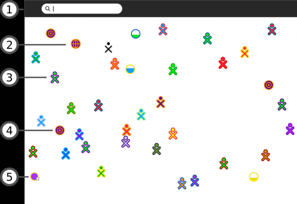

| Stockage | Index | Vue de Groupe |
Vous pouvez utiliser la Vue de voisinage pour vous connecter à Internet ainsi que pour collaborer avec d'autres utilisateurs.
Pour visualiser la Vue de voisinage, cliquez sur l'icône Voisinage dans le cadre ou sur la touche Voisinage, pour autant que votre clavier en ait une, ou appuyez sur la touche F1.

1. Menu de recherche
Par le biais de ce menu, vous pouvez chercher d'autres utilisateurs, des Activités ou encore des points d'accès.
2. Activités partagées
Vous pouvez aller sur une Activité en cliquant sur l'icône de l'Activité désirée. Les Activités partagées par les autres apparaîssent sous forme d'icônes dans la Vue de voisinage.
3. Icône XO
Les autres utilisateurs apparaîssent dans la Vue de voisinage. En glissant votre pointeur sur une icône XO, vous pouvez voir le pseudonyme de son utilisateur et l'ajouter comme ami, ou encore, l'inviter à partager une Activité.
4. Icône réseau maillé
L'icône réseau maillé vous permet de vous connecter à un serveur d'école ou à d'autres ordinateurs sur un même réseau maillé (802.11s). Le XO d'OLPC possède trois canaux de réseaux maillés. En cliquant sur son icône réseau maillé, vous rejoindrez ce réseau-là, et vous vous déconnecterez du point d'accès réseau. Les autres icônes XO peuvent se modifier selon qui se trouve sur le réseau maillé que vous rejoignez.
5. Point d'accès
Les points d'accès à Internet apparaîssent en tant que cercles dans la Vue de voisinage. Si vous faites glisser votre curseur en dessus du cercle, le nom du point d'accès (de l'ESSID qui l'émet) apparaît.
- Pour vous connecter à un point d'accès, cliquez sur le cercle. Si le cercle indique le symbole de blocage, attendez-vous à ce qu'il vous soit demandé une clé d'accès ou un mot de passe pour pouvoir vous y connecter. L'intérieur du cercle clignote tandis que votre système essaie de se connecter. Une fois que vous êtes connecté, une icône de connexion apparaît. en bas à droite du Cadre. Le fait de cliquer sur l'icône d'un point d'accès indique que vous ne désirez plus collaborer via le réseau maillé - ce qui entraînera l'apparition ou la disparition des autres icônes XO (icônes de vos pairs). Pour vous déconnecter, faites glisser votre pointeur sur le cercle et choisissez Déconnecter dans le menu; ou faites glisser votre pointeur sur l'icône dans le Cadre et choisissez "déconnecter" dans le menu.
- Pour vous déconnecter, faites glisser votre pointeur sur le cercle et sélectionnez Déconnecter dans le menu ; ou faites glisser votre pointeur sur l'icône dans le Cadre et choisissez Déconnecter dans le menu.
Une fois que la connexion est établie, l'icône sera modifiée.
| Stockage | Index | Vue de Groupe |